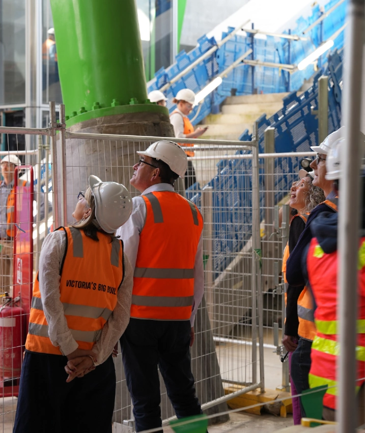
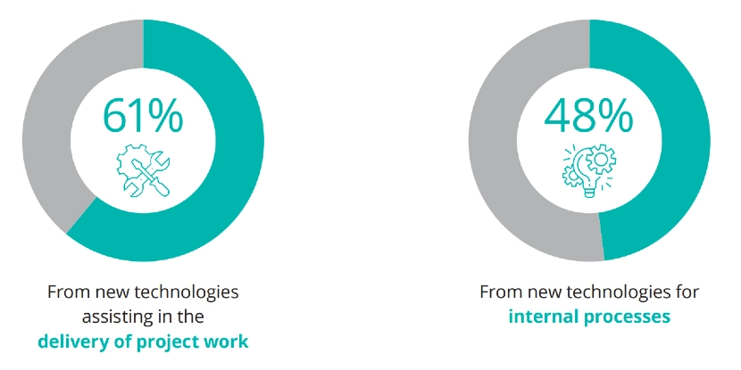

From the archive · Originally published in 2023. References to industry conditions, regulations and software reflect the original publication date.
The Australian construction sector faced significant challenges in 2023, with many high flyers continuing to collapse. This phenomenon extends from builders and developers shown on the news to building services contractors, with well-known names in the commercial construction industry like Rival Air Services, CDC Plumbing and Drainage, and Richstone Group joining the fray in 2023.

In 2023, Australian engineering and construction companies grappled with formidable challenges in project delivery due to escalated labour and supply chain expenses, heightened inflation, and extended delays in receiving equipment and materials. [3]
Technological Transformation
On a positive note, 2023 witnessed an increased transformation in the construction sector spurred by increased challenges. Traditionally a technology-stagnant industry, more and more businesses widely adopted new practices to increase productivity and margin. Some of these practices may be familiar to the frontrunners, but they were previously unknown to many other businesses that rely on the old ways of operating.
Technology as a Game-Changer
Cloud construction management software, construction wearables, and data analytics are becoming increasingly pivotal. Just recently, in September 2023, Trimble, an industrial technology company, partnered with Meta to launch SketchUp Viewer for Meta Quest, which aims to significantly reduce the barrier of entry for non-technical architects and building practitioners to experience and use VR in their presentations. [4] Architects and designers can easily export their existing Revit models to the IFC format and then import the IFC files in SketchUp to use this new VR technology.
In addition to these rapid developments, Building Information Modelling (BIM) and cloud construction software, despite being a relatively old technology, have seen significant adoption in this remote work era. When Deloitte surveyed businesses about the current use of different construction-related technologies, the most used was BIM (40%), followed by construction management cloud software (39%) and drones (37%). [5]
In the same survey, 54% and 48% of businesses agreed that evolving technologies and software interoperability impact their operations. 61% of companies surveyed selected using new technologies to assist with project delivery as their primary source of growth. In addition, 48% of surveyed firms realised the potential of using new technologies for internal processes to support a positive change. [5]

Steps Towards a Successful Digital Adoption
1. Develop a Business-wide Strategy:
Establishing goals and timelines for digital implementations and a properly planned budget is crucial. Ask and answer questions like "What is the business area that we are improving by implementing this technology?"
2. Build Motivation and a Change Management Plan:
Recognising that seasoned construction workers are typically technology-adverse is essential. Thus, the management team must create a solid change management strategy to cultivate team acceptance of any new practices in day-to-day operations.
3. Raise Digital Expertise Internally and Externally:
Attract digitally skilled team members or seek partnerships with established construction tech partners to ensure proper implementation of any new technology. The last thing a business wants is to implement something cumbersome to scale. What works well for one or two trial projects may not scale well for dozens of concurrent projects.
4. Focus on Business Outcomes:
Approach digitalisation with a clear business case and desired outcome. Align technology investments with key goals ensures any construction technology adoption is driven by actual business needs, not marketing trends.
Reflection and Prospects
2023 was a period of adaptation and resilience for the local construction industry. Developers, builders, and service contractors navigated a complex landscape due to the challenges of shortages and increased costs. Despite all these, the industry's growing emphasis on old and new construction tech points towards a future with increased efficiency and accuracy.
References
- [1] Sky News Australia. "Richstone Group collapses owing creditors $22 million and leaving 150 staff without a job following complications". Retrieved on November 11, 2023, from https://www.skynews.com.au/business/finance/richstone-group-collapses-owing-creditors-22-million-and-leaving-150-staff-without-a-job-following-complications/news-story/17f5fcafc4b2200f5f72631666e9abf7
- [2] Allan, J. [@JacintaAllanMP]. (2022, December 19). [Photograph of Daniel Andrews visiting the Metro Tunnel Project]. Twitter. Retrieved on November 11, 2023, from https://twitter.com/JacintaAllanMP/status/1604708587527630849/photo/2
- [3] KPMG Australia. "Global Construction Survey: Trends 2023" Retrieved on November 11, 2023, from https://home.kpmg/au/en/home/insights/2023/06/global-construction-survey-trends-2023.html
- [4] Trimble. (2023, September 27). Trimble and Meta Bring SketchUp to Meta Quest VR Headsets. [Press release] Retrieved on November 11, 2023, from https://investor.trimble.com/news/news-details/2023/Trimble-and-Meta-Bring-SketchUp-to-Meta-Quest-VR-Headsets/default.aspx
- [5] Deloitte Access Economics. (2023, March). The State of Digital Adoption in Construction Report 2023. Deloitte.